|
|
|
НАША МАША 6-7-8.09.2008 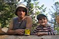
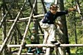 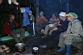 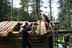 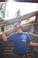 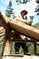 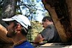
13-14.09.2008 Я на велосипеде, Лёха на мотоцикле, Дима Сибирь из Красноярска и Аня из Ярославля. Дима в позапрошлом сезоне пару раз заходил с нами, катался с Лесного и с Мамая. Они с Аней этим летом где только не бывали, все Россию автостопом проехали. Ребята с экологическо-волонтерским уклоном, весьма помогли нам с ремонтом. А сделали в эти выходные вот что - вставили стеклопакеты, выгребли из зимухи опилки от прошлогодней стройки (6 трехведерных кастрюль!), выровняли пол, сделали каркас для нижних нар, заделали дыры под первым венцом. Крышей не занимались, потому что был дождь. 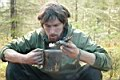 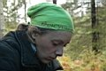
5.10.2008 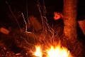
18-19.10.2008 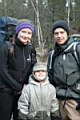 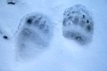 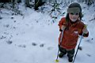 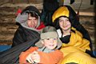
25-26.10.2008 Марина, Андрей zeffs, Ксюша Дронова и еще один Маринкин знакомый из ББТ (забыл имя). Ребята доделали настил на пол и покрасили стены антибактериальной пропиткой. Ну клёво отдохнули, а как же без этого :)
2.11.2008 Ну народу много было, сезон же открывали :) Лёха Пестов доделал свою подвесную полку хитрой конструкции, теперь там можно втроем спать! Еще он столик начал делать - все-таки за столом удобнее сидеть :) В итоге - айяяяй - к началу катального сезона так и не доделаная крыша! Ну и фиг с ней, и так тепло. К тому же, если с другой стороны посмотреть - ведь в дырку на крыше можно вставить поликарбонатовый пакет и это будет круто! Окно в крыше! :)
Теперь про новостройки. За лето 2008-го на Мамае прибавилось построек : Иркутяне и ангарчане - Саня, Вова, Бек, Сигл. Большое и аккуратно построенное зимовье. Находится рядом с нашим, через ручей. Зимовье конкретное, кажется 4х6 м, с дощатым полом, фасад приподнят на сваях, крыша без потолка, окон пока нет, дверь низкая, крыльцо на весь фасад, печька - булерьян. Начинали строить в конце июня, в начале ноября уже жили и тусили :) Вроде как у ребят в планах на следующее лето разобрать крышу и еще пару венцов добавить. Байкальчане shPROts-team - Космо, Самурай, Зулик, Антон, Артем. Зимуха тоже не маленькая, примерно 4х4 м. Тоже с дощатым полом и на сваях, и тоже без потолка. Ребята начали в конце июня, но бывали на стройке реже и рубили сруб по большей части топорами, так что к началу сезона не успели, дверь и часть крыши были закрыта полиэтиленом. Но зато с освещением все в порядке :) Печка греет хорошо, жить будут :) Иркутяне - Андрей и Женя. Эта сладкая парочка приступила к строительству своего гнездышка в августе. Зимушка примерно 2х2 м, расчитана на 4-х человек. В начале ноября еще доделывали крышу, но ребята серьезные, так что скоро будет и печка, и пол :) Обозначенные выше три зимухи (фото сделаны 5 октября) находятся недалеко от нашей, ребята во время строительства жили в нашей, бегали друг к другу по соседски, то лопату сломать, то пилу починить:) Я так думаю зимой тропина соединит все 4 зимовья и получится Левобережная улица :) Еще в начале июля недалеко от нас, у реки на правом берегу, внезапно появился каркас балагана, все лето одиноко простоял , а в октябре в нем сделали дверь, нары, печку и закрыли банерами. С соседями еще не познакомился, но по слухам - Марк Швецов и другие иркутяне. Возле Первой Сноубордической Зимухи уважаемого SATанюги и его компании, т.е. возле Гнилушки (народное название), появилось еще одно иркутское зимовье. Разборный домик завозили на 66-м и собирали в сентябре и октябре. Новые технологии освоили - Миха Мецик, Женя Попов, Андрей Караваев и другие. Домик расположился высоко, удачно устроившись углами на 4 булыгана. По слухам обошелся с доставкой в 50 т.р. Ну и отличились как всегда улан-удэнцы. Федерация "Байкальский Экстрим", а именно ее неугомонный президент Климов Сергей Лавинович, нашел козырное местечко вдали от всех, с персональным водопадом, озерцом, кулуаром и цирком(!), и организовал гигантскую стройку, собрав в общей сложности 20(!) фрирайдеров-строителей. Побывав несколько раз на стройке, могу точно сказать, что по размерам это будет что-то большое! Начинали они поздно, где-то в конце августа, на начало ноября еще крыши не было. Но новоселье по плану должно быть в ноябре, так что наверное все будет :) Подробности на их сайте, ищите там "Мамайские Хроники". Ну вот, вроде бы и всё, кажется никого не забыл. 2005г. - построена первая иркутская зимуха (SAT, Язык, Чукотка, Сява, Ира) 2006г. - улан-удэнская "Берлога" Малюка и Тугарина (про нее мало кто знает), чум Димы Яскина и чум Байкальского Экстрима 2007г. - слюдянско-иркутско-ангарская "Наша Маша", второй мега-чум Байкальского Экстрима, армейская палатка Пингвинов 2008г. - сразу пять зимовий и балаган! Вот такие дела творятся в Мамайском Республике :)
Текст : Лёха Слюдянский Подробности про Стройку года 2007 - "Наша Маша" |